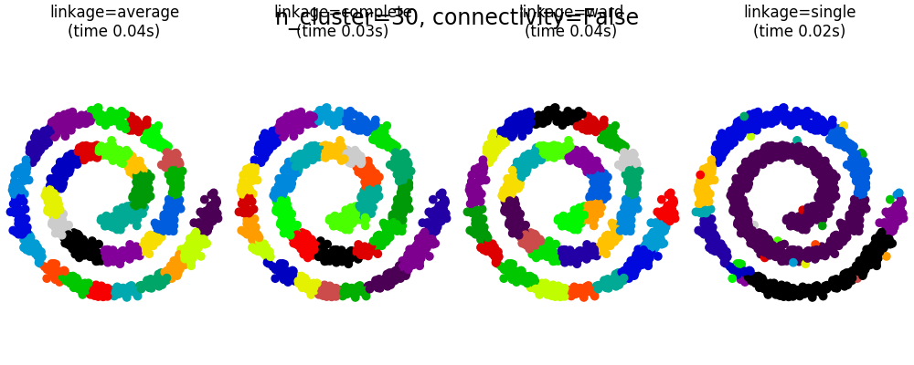
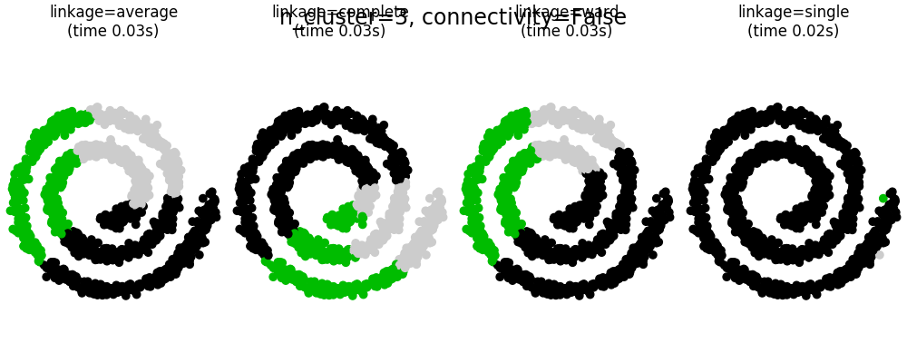
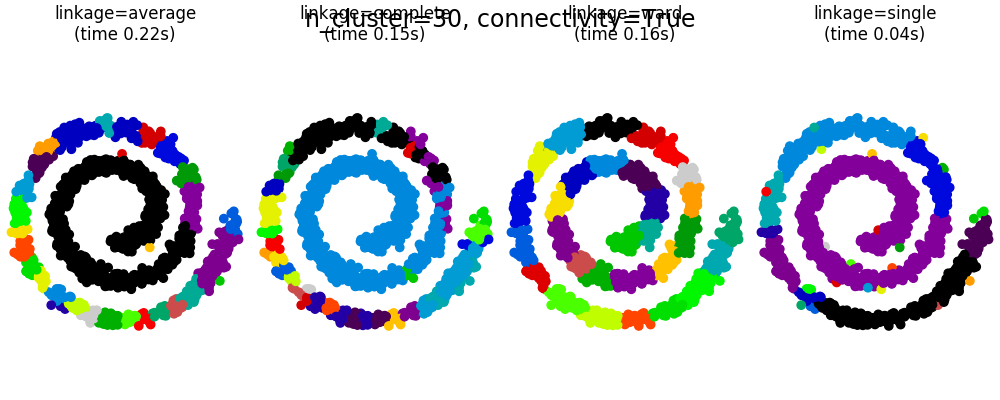
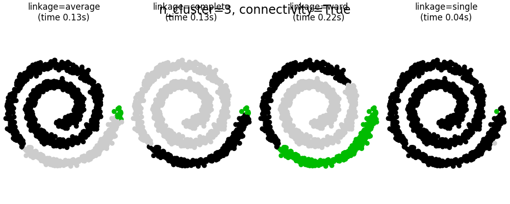

Note
Click here to download the full example code or run this example in your browser via Binder
Agglomerative clustering with and without structure¶
This example shows the effect of imposing a connectivity graph to capture local structure in the data. The graph is simply the graph of 20 nearest neighbors.
Two consequences of imposing a connectivity can be seen. First clustering with a connectivity matrix is much faster.
Second, when using a connectivity matrix, single, average and complete linkage are unstable and tend to create a few clusters that grow very quickly. Indeed, average and complete linkage fight this percolation behavior by considering all the distances between two clusters when merging them ( while single linkage exaggerates the behaviour by considering only the shortest distance between clusters). The connectivity graph breaks this mechanism for average and complete linkage, making them resemble the more brittle single linkage. This effect is more pronounced for very sparse graphs (try decreasing the number of neighbors in kneighbors_graph) and with complete linkage. In particular, having a very small number of neighbors in the graph, imposes a geometry that is close to that of single linkage, which is well known to have this percolation instability.
- 
- 
- 
- 
# Authors: Gael Varoquaux, Nelle Varoquaux
# License: BSD 3 clause
import time
import matplotlib.pyplot as plt
import numpy as np
from sklearn.cluster import AgglomerativeClustering
from sklearn.neighbors import kneighbors_graph
# Generate sample data
n_samples = 1500
np.random.seed(0)
t = 1.5 * np.pi * (1 + 3 * np.random.rand(1, n_samples))
x = t * np.cos(t)
y = t * np.sin(t)
X = np.concatenate((x, y))
X += .7 * np.random.randn(2, n_samples)
X = X.T
# Create a graph capturing local connectivity. Larger number of neighbors
# will give more homogeneous clusters to the cost of computation
# time. A very large number of neighbors gives more evenly distributed
# cluster sizes, but may not impose the local manifold structure of
# the data
knn_graph = kneighbors_graph(X, 30, include_self=False)
for connectivity in (None, knn_graph):
for n_clusters in (30, 3):
plt.figure(figsize=(10, 4))
for index, linkage in enumerate(('average',
'complete',
'ward',
'single')):
plt.subplot(1, 4, index + 1)
model = AgglomerativeClustering(linkage=linkage,
connectivity=connectivity,
n_clusters=n_clusters)
t0 = time.time()
model.fit(X)
elapsed_time = time.time() - t0
plt.scatter(X[:, 0], X[:, 1], c=model.labels_,
cmap=plt.cm.nipy_spectral)
plt.title('linkage=%s\n(time %.2fs)' % (linkage, elapsed_time),
fontdict=dict(verticalalignment='top'))
plt.axis('equal')
plt.axis('off')
plt.subplots_adjust(bottom=0, top=.89, wspace=0,
left=0, right=1)
plt.suptitle('n_cluster=%i, connectivity=%r' %
(n_clusters, connectivity is not None), size=17)
plt.show()
Total running time of the script: ( 0 minutes 2.319 seconds)